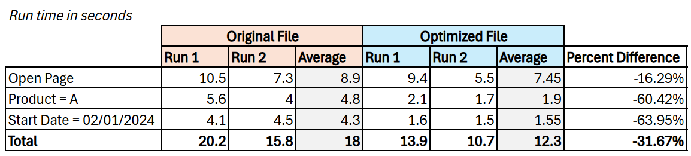

According to Cole Nussbaumer Knaflic in her book “Storytelling with Data”, an individual only has around 3-8 seconds to decide whether to continue to look at what you’ve put in front of them or direct their attention to something else.
I believe this logic can be applied to dashboards. Having a slow dashboard can essentially make it useless. When the end-user decides to open it and it takes at least 8 seconds to load, or when the user changes the slicer and it takes forever to show the results, then they most likely will redirect their attention to doing another task, or worse, analyze in Excel.
When this happens, throwing away this original dashboard is not the only solution (though I have been tempted to do this several times, so I feel you). An already existing dashboard can be elevated, and even made faster. However, in order to do this, we first need to figure out why the dashboard is slow.
Why is your dashboard taking forever?
In our project, we found that there are two aspects of your dashboard that can cause sub-optimal performance: the data model side and the visual side.
The Data Model Side
Check your schema. Power BI is more optimized for a star schema since the dimensions are helpful for filtering and grouping, while the fact table is for summarizing, all in all improving aggregation. Having a flat file is still acceptable but only for small data sets. If you are dealing with large volumes of data (ex. each row is a transaction, and there can be millions of transactions in a day) then a flat file just won’t cut it. Its performance and refresh is a lot slower, and maintenance will be more difficult down the line.
Do you have many-to-many relationships? Having this kind of relationship means that the two data sets you are connecting have duplicate values. The problem with this is it introduces ambiguity and may produce incorrect results (ex. in choosing an option from the slicer, from which table will the dashboard show the value?). This can also lead to excessive computing resources since the program will compute against multiple values across multiple tables.
Look at your Power Query transformations. Some particular heavy transformations are merge or append. Doing this is not a problem in it of itself, especially if your data set is not at all huge. However, doing merges and appends several times with large data volumes can definitely contribute to slow performance.
Are your DAX queries complicated? A heavily nested SWITCH statements, for example, will definitely slow down your dashboard as a measure has to re-calculate every time you interact with a report.
Similarly, calculated tables and columns are also not ideal, as these have to be re-calculated every time you refresh.
Overall just making your data model large by retaining unnecessary tables and columns can cause a slow dashboard.
The Visual Side
How many visuals do you actually need? For example, you have 3 card visuals with the same complex DAX measure filtered to different categories. The DAX measure and the visuals attached to it will render thrice. If the user decides to change the date slicer, then it will re-render again.
Other visual elements like text boxes and shapes have a negligible impact on the report. However, having lots of them could slow down page refresh since it’s also rendering other things at once–i.e. your DAX queries and main data visuals.
For the next bullet points, I find that these do not affect dashboard performance necessarily. As a developer, however, these can get frustrating in terms of report navigation and maintenance:
Custom visuals can get tricky. I find that sometimes, the visuals won’t render properly if the DAX measure is not in decimal point for example.
Having a large volume of pages can impact PBIX file size and can impede your development process. How do you navigate and maintain 100+ pages? (Not-so) Fun fact: when I add a new page, it goes towards the end. So if I want to put this new page at the beginning, I have to keep dragging this page until it reaches where I want it to be, which is really time-consuming.
Having several bookmarks is fine, but only if you have a defined naming convention for them. Imagine maintaining bookmarks of a report with 100+ pages!
I would also like to point out that while optimizing a dashboard with complex DAX measures, a sub-optimal data model with 90 million rows, 100+ pages, and several bookmarks, I was ultimately unable to open my file. This makes optimization impossible, rendering the hard work of the previous developers to be useless.
How can I fix it?
Upstream Your Data Model
For the data model side, here’s a principle that you should always take to heart:
Data should be transformed as far upstream as possible, and as far downstream as necessary.
What this means is data transformation should be as close as possible to the data source, but if some transformations are not totally possible to do in the data source itself, then take it downstream (ex. organizational reasons like not having permission to edit the data source).
Let’s say your data source is Snowflake. If you are collaborating with a data engineer, then you can provide them with the transformations you need and they will do it for you in Snowflake. That way, the data is completely transformed upon ingesting and Power BI will not have to do any additional steps, alleviating the performance of the dashboard.
Another example is choosing between Power Query and DAX. If you have the option to choose between the two, the definitely choose Power Query. So, when building the report, the calculation is already applied in the data and therefore does not have to re-render every refresh.
With this maxim, here are a couple things you can do:
Try to do all your merges and appends in the data source itself.
Upstream calculated columns and tables to the data source if possible; if not, try doing it in Power Query.
Try to see if you can upstream complex and nested DAX measures. For example–if you have to distinct count an ID where the Product = A, then see if you can ingest a pre-filtered table where the Product is already A to reduce computing resources.
Already remove unnecessary columns when ingesting the tables into Power BI.
Lastly, keeping in mind the maxim, redesign your data model. Before ingesting the tables into Power BI, have the star schema designed already with the tables you need. Make sure your dimension and fact tables are clean.
Perform Tests and Research on Tools
After you are done putting your calculations upstream, consider comparing this optimized version of the file to the un-optimized/original one. See if it makes a difference on performance. If the difference is negligible, then upstreaming the calculations might not be the only solution; you may have to consider the visual side like removing redundant visuals or combining them into one. Perhaps it’s the DAX measures and you should consider simplifying them.
Performing tests can give several insights as to what to do to elevate your dashboard. In order to do this, you may use tools such as Power BI’s native Performance Analyzer, or external tools like DAX Studio and Tabular Editor.
Personally, I like to use the (Advanced Power BI Performance Analyzer)[https://smartpowerbi.co.uk/2021/10/12/advanced-power-bi-performance-analyser-by-smartpowerbi/]by SmartPowerBI. If you’re like me who has a difficult time digesting the numbers in Performance Analyzer, this tool takes the exported JSON file from Performance Analyzer and presents it visually. I discovered this tool from (Guy In A Cube’s video)[https://www.youtube.com/watch?v=Z-J4n9uymQ0&t=2s] and I suggest you watch it too.
This is how my teammates and I performed the tests using this tool.
- Define the steps you want to do for the page you want to test on. This way, you can see which step takes the longest and identify a possible bottleneck. It can look like this:
- Open the page
- Choose Product = A
- Choose Start Date from 01/01/2024 to 02/01/2024
- Perform the test on the original PBIX and export the JSON file from performing the steps in Performance Analyzer. Do this on the optimized file as well. Use the Advanced Power BI Performance Analyzer to analyze the JSON files.
Note that results may vary per test. On some tests, the optimized file can be slower compared to the optimized file. This can also vary per device. Consider doing the tests multiple times on multiple devices then averaging the results.
- Compile and compare the results. Here’s an example of compiled run times. The “Total” row represents the sum of all steps for Run 1 and 2 (so 10.5 + 5.6 + 4.1 = 20.2), while the “Average” column represents the average of the two runs (so the mean of 10.5 and 7.3 is 8.9, and 20.2 and 15.8 is equal to 18). As you can see, we have improved the dashboard on average by 32%.

Revisit Your Dashboard Purpose/Use Cases
It’s easy to get carried away and over-engineer your dashboard, especially if the user wants so many features. Like I mentioned in the previous section, my teammates and I had to optimize a 100+ page dashboard with countless of measures and tables.
As much as we want to satisfy the requests of our dashboard users, I suggest you challenge them. A page’s function can easily overlap with another, and the same goes for visuals.
Question the dashboard–what does this page tell me? What is the story of this page? Why was this visual chosen? See if you can trim the fat and combine two visuals that tell the same story into one. Better yet, see if you can, for example, separate a 100 page dashboard into three dashboards with different functions and viewers instead.
Keep this in mind: who are you telling the story to, and what story do they want to see?
I always base my development/optimization process on these types of dashboards, though each individual’s definitions for these are pretty flexible:
Strategic dashboards display high-level aggregated data. These are not interactive since the goal is to give a “snapshot” of performance. These are viewed by senior-level management so they can make long-term decisions on company strategies. These usually contain success indicator visuals like gauge charts with a “green = good, red = bad” conditional formatting and a high-level time series.
Analytical dashboards, compared to strategic dashboards, are highly interactive with high volumes of data. These are for making comparisons, analyzing trends, and overall “investigating” so the viewers can uncover key insights that they might not see at first glance.
Operational dashboards are for monitoring short-term trends and operation. This is to see a company’s past and present performance, and predict the near future. An example is observing if a marketing campaign is reaching their target for the current month.
Helpful resources?
You can read about star schemas here https://learn.microsoft.com/en-us/power-bi/guidance/star-schema
Roche’s maxim: https://www.youtube.com/watch?v=OAlys79j81Q&t=166s
smart BI: https://www.youtube.com/watch?v=Z-J4n9uymQ0&t=2s
smart BI documentation: https://smartpowerbi.co.uk/2021/10/12/advanced-power-bi-performance-analyser-by-smartpowerbi/
Citation
@online{luciano2024,
author = {Luciano, Rain},
title = {A {Few} {Ways} to {Fix} {Your} {Slow} {Power} {BI}
{Dashboard}},
date = {2024-06-15},
url = {https://rain-luciano.github.io/posts/2024-06-14-Blog1/2024-06-14-Blog1.html},
langid = {en}
}